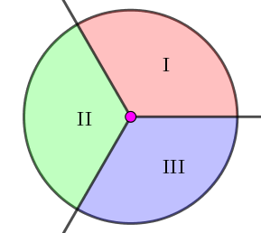

有一个面积为 $1$ 的圆，你需要将它切成 $N$ 块。每一刀都是从一个半径 (从圆心出发的射线)，那么显然需要切 $N - 1$ 刀。
对于一个切割方案，它会选择若干个连续的扇形 (可以为 $0$ 个)，设它们的面积和为 $x$，它会合理的选择 $x$，使得 $\left| x - \dfrac 13 \right|$ 是所有选择方案中最小的。把最小的 $\left| x - \dfrac 13 \right|$ 称为这次切割的权值。
现在，已知 $N - 1$ 刀是 (极角) 均匀分布的，求切割的权值的期望。
共一行，包含一个正整数 $N$ ($2 \leq N \leq 10^6$)。
输出一行一个整数，表示切割的权值的期望在模 $10^9 + 7$ 意义下的值，容易证明，它是一个有理数。
不妨假设第一刀的极角 (范围 $\left[ 0, 2 \pi \right)$) 为 $0$，其余所有刀的极角都不是 $0, \dfrac {2 \pi} 3, \dfrac {4 \pi} 3$ (可以这样假设，因为均匀分布的实数等于特定值的概率为 $0$)。
我们按照射线 $\theta = 0, \theta = \dfrac {2 \pi} 3, \theta = \dfrac {4 \pi} 3$ 将整个圆分为三个部分，如下图：
于是，除了第一刀的极角为 $0$ (在 Ⅰ 和 Ⅲ 的交界处)，其余每一刀均恰好落在某个区域。
然后，我们考虑对于若干连续的扇形的面积和，可以看成两个刀的极角差 $\alpha - \beta$ (以下所有角度均在模 $2 \pi$ 意义下理解)，我们需要计算的 (能产生贡献的) 是 $\left| \alpha - \beta - \dfrac {2 \pi} 3 \right|$ 这一项 (前面的常数先扔掉不管)。
这相当于，我们把刀 $\beta$ 绕圆心逆时针旋转 $\dfrac {2 \pi} 3$，变为 $\beta' \equiv \beta + \dfrac {2 \pi} 3 \pmod {2 \pi}$，于是上面的式子就变成了 $\left| \alpha - \beta' \right|$。
于是问题就相当于，我们有 $n$ 个 A 型刀，将所有刀都绕圆心逆时针旋转 $\dfrac {2 \pi} 3$，得到 $n$ 个 B 型刀，我们需要最小化 A 型刀和 B 型刀的距离最小值。
然而这还是不好处理，既然我们已经转了一轮，那我们不妨再转一轮，得到 $n$ 个 C 型刀。
这样，如果不考虑刀的类型，则在三个区域中，刀的相对位置是全等 (同构) 的 (也就是，Ⅰ 区域中的所有刀转 $\dfrac {2 \pi} 3$ 就得到了 Ⅱ 区域中的所有刀，etc)。
这样，我们考虑一个区域就行了 —— 问题就转化成了如下：
在区间 $\left( 0, \dfrac {2 \pi} 3 \right)$ 中均匀随机 $n - 1$ 个实数，连同 $0$ 和 $\dfrac {2 \pi} 3$，构成 $n + 1$ 个实数 $0 = a_0 < a_1 < a_2 < \cdots < a_{n-1} < a_n = \dfrac {2 \pi} 3$；每个实数有一个类型 $t_i \in \left\{ 0, 1, 2 \right\}$，满足 $t_0 = 0, t_n = 1$，其余 $t_i$ 在 $0, 1, 2$ 中均匀随机。
定义 $F = \min\limits_{0 \leq i < j \leq n; t_i \neq t_j} \left| a_i - a_j \right|$，求 $F$ 的期望。
首先，可以注意到第一个性质：在最优的 $F$ 中，$j = i + 1$。
反之，设最优解 $i, j$ 满足 $i + 1 < j$。由于 $t_i \neq t_j$，因此 $t_i, t_{i+1}, \cdots, t_j$ 颜色不可能全部相同，因此必存在相邻两个 $k, k + 1$ ($i \leq k < j$) 使得 $t_k \neq t_{k+1}$，而此时 $0 < t_{k+1} - t_k < t_j - t_i$，与 $i, j$ 是最优解矛盾。
于是，式子就化成了 $F = \min\limits_{0 \leq i < n; t_i \neq t_{i+1}} \left| a_i - a_{i+1} \right|$。同时，为了方便，我们下面用 $1$ 来代替上面的 $\dfrac {2 \pi} 3$。
先不考虑 $t_i \neq t_{i+1}$ 的限制 —— 即在 $\left( 0, 1 \right)$ 中均匀随机 $n - 1$ 个实数，求连同 $0, 1$ 后最接近的两个数的差的绝对值的期望。
设这 $n + 1$ 个实数为 $0 = a_0 < a_1 < a_2 < \cdots < a_{n-1} < a_n = 1$，连续型随机变量 $\xi = \min\limits_{0 \leq i < n} \left| a_{i+1} - a_i \right|$，显然 $0 \leq \xi \leq \dfrac 1n$。
欲求 $E \left( \xi \right)$，我们先求随机变量 $\xi$ 的分布函数 $C \left( x \right) = p \left( \xi \leq x \right)$ 的值。
考虑 $p \left( \xi \geq x \right)$，从测度空间的角度来考虑，概率空间为一个边长为 $1$ 的 $n - 1$ 维超立方体，它的体积 (测度) 恰好是 $1$。
我们考虑一个满足条件的划分 $0 = a_0 < a_1 < a_2 < \cdots < a_{n-1} < a_n = 1$，考虑 $b_i = a_i - i \cdot x$，则由 $a_{i+1} \geq a_i + x \Leftrightarrow b_{i+1} + \left( i + 1 \right) \cdot x \geq b_i + i \cdot x + x \Leftrightarrow b_{i+1} \geq b_i$。
也就是说，$0 = b_0 < b_1 < b_2 < \cdots < b_{n-1} < b_n = 1 - n \cdot x$ 是 $\left( 0, 1 - n \cdot x \right)$ 的一个 (正常) 划分。
由于 $a_i$ 互不相同，$b_i$ 也互不相同，因此我们可以规定 $a_i$ 的原 "序" 和原 $b_i$ 的 "序" 相同，从而我们就建立了 "$\left( 0, 1 \right)$ 的满足 $\xi \geq x$ 的划分" 与 "$\left( 0, 1 - n \cdot x \right)$ 的正常划分" 的一个一一对应 (双射)。
同时，由于有任意两个变量相同的概率为 $0$ (即它是一个零测集)，以及我们所做的变换是有限个平移变换，由测度的性质知，蓝色部分 ($\left( 0, 1 \right)$ 的满足 $\xi \geq x$ 的划分) 的粉色部分 ($\left( 0, 1 - n \cdot x \right)$ 的正常划分) 的测度相同，从而概率相同。
而后者的测度 (体积) 自然是 $\left( 1 - n \cdot x \right)^{n-1}$，从而说了那么多，我们终于证明了：$\color {green} {p \left( \xi \geq x \right) = \left( 1 - n \cdot x \right)^{n-1}}$。
由连续型随机变量的期望定义，以及分部积分法 (当然你可能不需要用到这些)，有 \begin{align*} E \left( \xi \right) &= \int_0^{1/n} x \cdot C' \left( x \right) \mathrm dx \\ &= \int_0^{1/n} x \cdot \mathrm d C \left( x \right) \\ &= x \cdot C \left( x \right) \bigg\vert_0^{1/n} - \int_0^{1/n} C \left( x \right) \mathrm dx \\ &= \frac 1n \cdot C \left( \frac 1n \right) - \int_0^{1/n} p \left( \xi \leq x \right) \mathrm dx \\ &= \frac 1n - \int_0^{1/n} \left( 1 - p \left( \xi \geq x \right) \right) \mathrm dx \qquad \left( \text{连续型随机变量中，} p \left( \xi = x \right) = 0 \right) \\ &= \frac 1n - \int_0^{1/n} \mathrm dx + \int_0^{1/n} p \left( \xi \geq x \right) \mathrm dx \\ &= \int_0^{1/n} \left( 1 - n \cdot x \right)^{n-1} \mathrm dx \\ &= - \frac 1n \int_1^0 \left( 1 - n \cdot x \right)^{n-1} \mathrm d \left( 1 - n x \right) \\ &= \frac 1n \int_0^1 y^{n-1} \mathrm dy \\ &= \frac 1n \cdot \dfrac 1n \\ &= \frac 1 {n^2} \end{align*}
既然，已经求出最接近的两个数的差的期望了，那么我们不妨将 $a_{i+1} - a_i$ 排排序，设连续型随机变量 $\xi_k$ 表示这 $n$ 个数中第 $k$ 小的数。
考虑 $\xi_2$，当给定一组划分时，此时最短的线段长度为 $\xi_1$。通过构造一一映射和测度的方法，同样可以证明：
当 $\xi_1$ 确定时，$\xi_2$ 的期望为 $\xi_1 + \dfrac {1 - n \cdot \xi_1} {\left( n - 1 \right)^2}$。
于是，由全期望公式，$E \left( \xi_2 \right) = E \left[ E \left( \xi_2 \mid \xi_1 \right) \right] = E \left( \xi_1 + \dfrac {1 - n \cdot \xi_1} {\left( n - 1 \right)^2} \right) \color {fuchsia} = \dfrac 1 {n^2} + \dfrac {1 - n \cdot 1/{n^2}} {\left( n - 1 \right)^2} = \dfrac 1n \left( \dfrac 1n + \dfrac 1 {n - 1} \right)$ (ps: 粉色等号是因为期望的线性性)。
同理，可以归纳证明：$\color {green} {E \left( \xi_k \right) = \dfrac 1n \left( \dfrac 1n + \dfrac 1 {n - 1} + \cdots + \dfrac 1 {n - k + 1} \right) = \dfrac {H_n - H_{n-k}} n}$ (其中 $\displaystyle H_n = \sum_{i=1}^n \frac 1i$ 为调和数)。
当 $k = 1, 2$ 时，结论成立。
设结论对小于 $k$ 的正整数成立，则考虑 $\xi_k$，用类似的方法可知，对一个已知的 $\xi_1$，将所有段的长度都减去 $\xi_1$，于是 $\xi_k$ 就服从长度为 $\left( 0, 1 - n \cdot \xi_1 \right)$ 的区间中的第 $k - 1$ 小的数 (严格的证明还是通过测度的方法)。
于是，$E \left( \xi_k \mid \xi_1 \right) = \xi_1 + \left( 1 - n \cdot \xi_1 \right) \cdot E_{n-1} \left( \xi_{k-1} \right) = \xi_1 + \dfrac {1 - n \cdot \xi_1} {n - 1} \left( H_{n-1} - H_{n-k} \right)$。
由全期望公式，$E \left( \xi_k \right) = E \left[ E \left( \xi_k \mid \xi_1 \right) \right] = E \left( \xi_1 + \dfrac {1 - n \cdot \xi_1} {n - 1} \left( H_{n-1} - H_{n-k} \right) \right) = \dfrac 1 {n^2} + \dfrac {1 - n \cdot 1/{n^2}} {n - 1} \cdot \left( H_{n-1} - H_{n-k} \right) = \dfrac 1n \left( \dfrac 1n + H_{n-1} - H_{n-k} \right) = \dfrac {H_n - H_{n-k}} n$。
由归纳原理知结论对 $1 \leq k \leq n$ 成立。
于是，在没有 $t_i$ 的限制下的问题，我们已经基本获得了解决：在 $\left( 0, 1 \right)$ 中均匀随机 $n - 1$ 个实数，将 $\left( 0, 1 \right)$ 分成的 $n$ 个子区间中，第 $k$ 短的区间长度期望为 $\dfrac {H_n - H_{n-k}} n$。
最后，我们需要加入 $t_i \neq t_{i+1}$ 的限制，再来考虑整个问题。
首先，能注意到，所有划分点的位置和类型的随机是互相独立的。
于是，忽略掉有两段长度相等的情况 (测度也为 $0$)，对于一种确定的划分位置，它的最短段是唯一的。
而可以发现，这个最短段，有 $\dfrac 23$ 有概率，成为真正的答案 (两端类型不相同 $t_i \neq t_{i+1}$)。
由于这个 $\dfrac 23$ 和划分点以及它是第几段没有关系，因此，不管怎么划分，最短段成为答案 (它两端类型不相同) 的概率都是 $\dfrac 23$。
那么，对于剩下的 $\dfrac 13$ 的概率，完全类似地 —— 只不过这回是离散型随机变量了 —— 把那相同类型的两个划分点 "缩起来" (因为我们已经不关心位置了)，于是，变成了一个 $n - 1$ 个段的子问题。
因此，次短段成为最后的答案的概率就应为 $\dfrac 23 \cdot \dfrac 13 = \dfrac 29$。
同理，第 $k$ ($1 \leq k \color {red} < n$) 短的段成为最后的答案的概率为 $\dfrac 2 {3^k}$。
特别地，第 $n$ 短 (最长) 的段称为最后的答案的概率为 $\dfrac 1 {3^{n-1}}$ (因为此时只剩下两个段，而 $t_0 = 0, t_n = 1$ 是不相同的)。
到现在，终于可以列出式子啦！
由于，第 $i$ 短的段成为答案的概率为 $\dfrac 2 {3^i}$，它的长度期望为 $\dfrac {H_n - H_{n-i}} n$，最后一次使用全期望公式，得 $$ E \left( F \right) = \sum_{i=1}^{n-1} \frac 2 {3^i} \cdot \frac {H_n - H_{n-i}} n + \frac 1 {3^{n-1}} \cdot \frac {H_n} n $$
已经可以 $O \left( n \right)$ 计算啦！为了美观，我们最后再做一次和式变换：\begin{align*} E \left( F \right) &= \sum_{i=1}^{n-1} \frac 2 {3^i} \cdot \frac {H_n - H_{n-i}} n + \frac 1 {3^{n-1}} \cdot \frac {H_n} n \\ &= \frac 1n \cdot \left( \sum_{i=1}^{n-1} \frac 2 {3^i} \cdot \left( H_n - H_{n-i} \right) + \frac 1 {3^{n-1}} \cdot H_n \right) \\ &= \frac 1n \cdot \left( H_n \cdot \left( \sum_{i=1}^{n-1} \frac 2 {3^i} + \frac 1 {3^{n-1}} \right) - \sum_{i=1}^{n-1} \frac 2 {3^i} \cdot H_{n-i} \right) \\ &= \frac 1n \cdot \left( H_n - \sum_{i=1}^{n-1} \frac 2 {3^{n-i}} \cdot H_i \right) \\ &= \frac 1n \cdot \left( \sum_{j=1}^n \frac 1j - \sum_{i=1}^{n-1} \frac 2 {3^{n-i}} \sum_{j=1}^i \frac 1j \right) \\ &= \frac 1n \cdot \left( \sum_{j=1}^n \frac 1j \left( 1 - \sum_{i=j}^{n-1} \frac 2 {3^{n-i}} \right) \right) \\ &= \frac 1n \cdot \left( \sum_{j=1}^n \frac 1j \left( 1 - \sum_{i=1}^{n-j} \frac 2 {3^i} \right) \right) \\ &= \frac 1n \cdot \left( \sum_{j=1}^n \frac 1 {j \cdot 3^{n-j}} \right) \end{align*}
当然，不要忘记最后再乘上一个 $\dfrac 13$，因为我们的区间总长只有 $\dfrac 13$。综上所述，最终的答案就等于 $$ Ans \left( n \right) = \frac 1n \cdot \sum_{i=1}^n \frac 1 {3^i \cdot \left( n - i + 1 \right)} $$
时间复杂度 $O \left( n \right)$。
#include <bits/stdc++.h>
typedef long long ll;
const int mod = 1000000007, iv3 = (mod + 1) / 3;
int n;
int inv[1000054];
int main() {
int i, s = iv3;
scanf("%d", &n);
for (inv[1] = 1, i = 2; i <= n; ++i)
inv[i] = ll(mod - mod / i) * inv[mod % i] % mod, s = ll(s + inv[i]) * iv3 % mod;
printf("%d\n", int((ll)s * inv[n] % mod));
return 0;
}
坑1：具体实现的时候可以使用类似多项式求值的秦九韶算法。